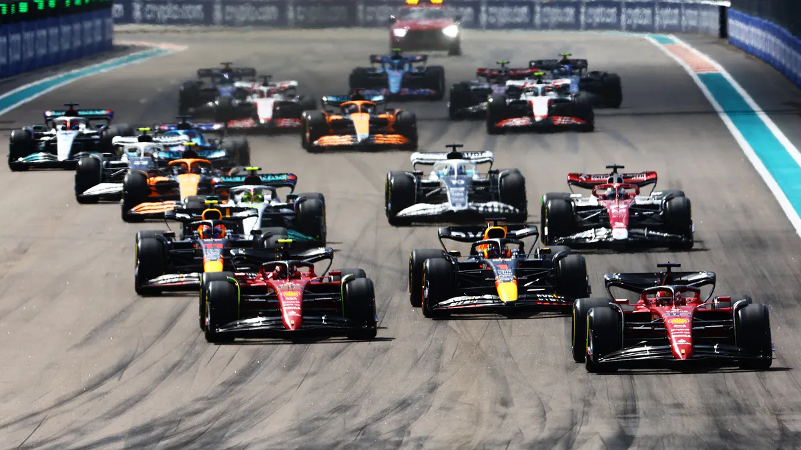

<!DOCTYPE html>
<html lang="en">
<head>
    <meta charset="UTF-8">
    <meta http-equiv="X-UA-Compatible" content="IE=edge">
    <meta name="viewport" content="width=device-width, initial-scale=1.0">
    <title>Document</title>
    <link rel="stylesheet" href="style.css">
</head>
<body bgcolor="lightblue">

<table border="1">
<tr>
  <td>

</td>

</tr>


</table>


    
</body>
</html>

<font color="red">F1</font>


<p><b>Formuła 1</b></p>

<p><i>Bardzo interesuję się Formułą 1. Jest to jeden z najpopularniejszych sportów motorowych na świecie. Moja przygoda z F1 rozpoczęła się z początkiem 2019 roku. Wtedy usłyszałem od mojego taty, że do ścigania ma powrócić popularny polski kierowca Robert Kubica.</i></p>

<p><u>Początkowo nie miałem żadnego pojęcia, kim on jest i gdzie się ściga. Postanowiłem, że poczytam więcej o tym sporcie w internecie. Z czasem odbył się pierwszy wyścig F1, który obejrzałem z rodzicami. Nie spodziewałem się, że jeden wyścig mógł wzbudzić we mnie tak ogromne zainteresowanie. Od tego czasu postanowiłem,że będę oglądał każdy wyścig.</u></p>

<p><b>Na czym dokładniej polega F1 ? Są to zawody motorsportowe, gdzie startuje 10 zespołów, gdzie każdy zespół ma dwóch kierowców. Kierowcy F1 ścigają się na torach na całym świecie.Każdy z kierowców rywalizuje z innymi o zwycięstwo i jak największe zdobycze punktowe dla zespołu.</b> </p>

<p><i>Punktacja wygląda następująco: 1.25pkt, 2.18pkt, 3.15pkt, 4.12pkt, 5,10pkt, 6.8pkt, 7.6pkt, 8.4pkt, 9.2pkt, 10.1pkt. Zespoły które uczestniczą w tym sporcie to: Ferrari, Red-Bull Racing, Mercedes, Mclaren, Alpine F1 Team, Aston Martin, Alpha Tauri, Alfa Romeo Racing, Williams Racing. Bardzo zachęcam do rozpoczęcia oglądania tego sportu.</i></p>

<p> Ulubione strony WWW</p>

<ul>
<li><a href="https://www.youtube.com/">YT</a></li>
<li><a href="https://www.formula1.com/">F1</a></li>
 <li><a href="https://www.youtube.com/watch?v=dQw4w9WgXcQ">hmmm</a></li>
mama</a></li>

</ul>

